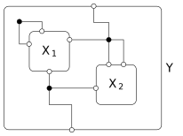
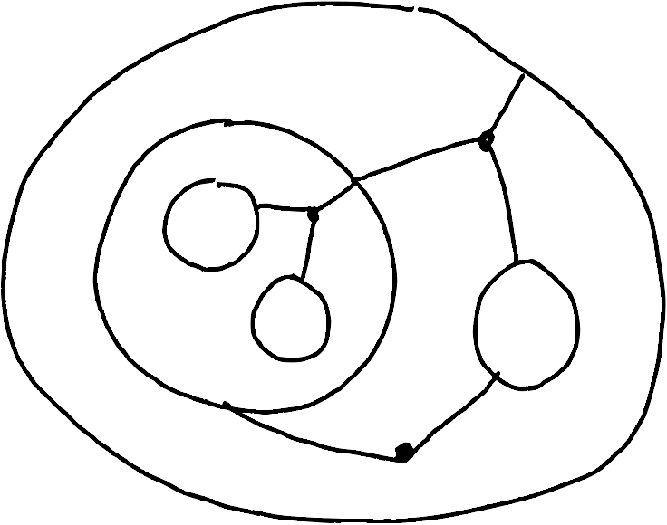

ACT2023 AlgebraicJulia Tutorial
\[ \newcommand{\R}{\mathbb{R}} \]
Part 1: Category theory in Julia
Overview of part 1:
- Category theory in a dynamic language??!?!
- Julia
- Category theory in Julia
Category theory in a dynamic language
It’s not as cursed as you’d think.
– Owen Lynch, 2023
- Curry-Howard correspondence gives a connection between typed lambda calculus and cartesian closed categories
- This is not the only way of doing category theory on a computer
- Many categorical things can be implemented without working in a faithful implementation of the typed lambda calculus
- Databases
- Dynamical systems
- Computer algebra
What is Julia?
Julia is a programming language that is…
Dynamic
Variables don’t have types, only values do.
Fast
Carefully written Julia is competitive with C or Fortran.
Dependently typed
Although only values have types, the types of those values can depend on other values. For instance
StaticVector{Float64, n}represents \(\mathbb{R}^n\).Looks like math
\[ ||v||^2 = v^T v \]
Why is Julia?
Julia was built to solve the so-called “two-language” problem for scientific computing.
- Numerical algorithms written in C/C++/Fortran
- High-level, dynamic interfaces written in Python/R
Interfacing the “two languages” is a complex endeavor beyond the reach of small projects
Julia is a single language that can achieve the speed of C/C++/Fortran while still having high-level interfaces a la Python/R.
How do you Julia? (1)
A simple implementation of the Euler algorithm for integrating a vector field
# du : ℝⁿ -> ℝⁿ is the vectorfield
# init : ℝⁿ is the initial state
# dt : ℝ is the time increment
# m : ℕ is the number of steps to run for
function euler(du::Function, init::Vector{Float64}, dt::Float64, m::Int)
n = length(init)
x = zeros(Float64, (m + 1, n)) # a matrix to store the path
x[1,:] = init # initialize the first row
for i in 1:m
x[i+1,:] = x[i,:] + dt * du(x[i,:]) # write the next row
end
x # return the path
endNotable features:
- Built-in vectors/matrices
- Auto-broadcasted arithmetic
- Syntax familiar to a Python user
How do you Julia? (2)
# | output: true
# Simulate the trajectory of a 1kg cannonball in 2d
# initial position = (0,0)
# initial velocity = (5.0, 10.0)
# (d/dt)(x,v) = (v, (0, -9.8))
trajectory = euler(u -> [u[3], u[4], 0, -9.8], [0, 0, 5.0, 10.0], 0.1, 22)
plot(trajectory[:, 1], trajectory[:, 2])Notable features:
- Easy anonymous functions
- Easy plotting (with package
Plots.jl)
How do you Julia? (3)
A simple interpreter
# | output: true
struct CalcExpr{op}
args::Vector{Union{CalcExpr, Float64}}
end
evaluate(n::Float64) = n
evaluate(e::CalcExpr{:+}) = sum(evaluate.(e.args))
evaluate(e::CalcExpr{:*}) = prod(evaluate.(e.args))
evaluate(CalcExpr{:*}([2.0, 3.0, CalcExpr{:+}([1.0, 1.0])]))Notable features:
- Single-line function definition
- First-class symbols (
:blah,:*,:+) - The type of a struct can be parameterized by a value
- Map
foverxswithf.(xs) - Multiple dispatch allows multiple definitions of a function for different types
Where is Julia?
Category theory in Julia: FinSet
Category theory in Julia: FinVect
Part 2: Dynamical systems and composition patterns
Compositional systems theory
- Every system has an interface by which it interacts with other systems
- Interaction with other systems is captured via composition
- The types of allowed interaction are specified by a doctrine
In this part, we discuss systems, interfaces, and composition patterns for the doctrine of resource sharers, and how they work in AlgebraicJulia.
The key to compositional systems theory is to split a system into the system itself and the interface to the system.
Then different systems with the same interface can play the same role in composition patterns.
In this section we are going to talk about one type of system, and one type of composition pattern.
Finally, in the last section we are going to talk about how to use that composition pattern to compose the systems.
What are resource sharers?
- Continuous dynamical systems (i.e. ODEs)
- Expose “resources” as their interface
- Compose by “agreeing” on the value of resources
- Derivative of a resource is the sum of the vectorfields from all systems using that resource
Resource sharers are dynamical systems that expose certain quantities that we call resources. They are composed by “sharing” resources. One might assume that “sharing” means “dividing between them”, however this is not the case. What it means for two machines to share a resource is that they both agree on the value of that resource.
For instance, if one machine represents the dynamics of a population of foxes and a population of rabbits, and another represents the dynamics of a population of hawks and a population of rabbits, then one composition of these machines might be a system which represents the dynamics of a population of hawks, a population of rabbits, and a population of foxes. The fox-rabbit system and the hawk-rabbit system agree on the overall population of rabbits.
However, both the fox-rabbit system and the hawk-rabbit system can both “tug” on the population of rabbits, by sending it down.
A note on representations of morphisms
- In a non-dependently typed language
- Can’t assert any properties about arbitrary functions, i.e. smoothness or termination
- Can’t compute general limits or colimits where the morphisms are arbitrary functions
- When we need to do something with functions other than simply apply them to arguments, we need an introspectable representation
- Two special cases:
- Functions between finite sets
- Linear maps between finite dimensional vector spaces
- AlgebraicJulia, in contrast to most functional programming category theory libraries, focuses on working with these representations
- We will contrast the two approaches as geometric (concerned with the points of spaces and the actions of functions on those points) vs. symbolic (concerned with symbolic representations of spaces and functions between them)
One way of mathematically defining resource sharers would be to say that their interfaces were spaces. However, what does this actually mean on a computer? We could say that a space was a type. But in a dynamic language, this is not very helpful. Moreover, we really want some smooth structure on our spaces.
Our philosophy is that one should have a symbolic representation of a space. What symbolic representation? Well, one chooses a level of generality appropriate for the application. In this case, we mostly just care about \(\R^n\). Thus, denoting a space by a natural number or a finite set is an appropriate choice.
What then is a function between symbolic spaces \(\R^n\) and \(\R^m\)? One choice would be a Julia function that takes a length \(n\) vector to a length \(m\) vector. This is appropriate in some circumstances, but it is not introspectable, which makes some operations uncomputable. For instance, it is impossible to take a pushout or pullback of such functions.
A more introspectable, yet more restrictive choice would be matrices. These are much easier to compute with. However, for our purposes, an even simpler choice of maps works best: functions from \([m]\) to \([n]\).
Geometric definition of resource sharers
An interface for a geometric resource sharer is a space \(A\).
We think of an interface as a description of the resources that a machine has available to share.
A geometric resource sharer on an interface \(A\) consists of
- A space \(X\)
- A function \(\mathrm{out} \colon X \to A\)
- A vector field \(v \colon X \to TX\)
Example resource sharer
This is a system which models predation of a predator species \(W\) on a prey species \(S\)
\[ X = A = \R^2 \] \[ \mathrm{expose} = \mathrm{id}_A \] \[ v(W,S) = (\beta W S, -\beta W S) \]
Symbolic definition of resource sharer
An interface for a symbolic resource sharer is a finite set \(P\).
This finite set symbolically represents the space \(\R^P\). We think of \(P\) as the set of ports.
A symbolic resource sharer on an interface \(P\) consists of
- A finite set \(I\)
- A function \(\mathrm{expose} \colon P \to I\)
- A vector field \(v \colon \R^I \to \R^I\)
The function \(\mathrm{expose}\) symbolically represents the function \(\R^I \to \R^P\) given by precomposition with \(\mathrm{expose}\).
Note that we keep a geometric definition of \(v\); this is because we will only need to call \(v\) and don’t need to introspect it.
Composing resource sharers \((X_1, v_1, P_1)\) and \((X_1, v_2, P_2)\) to make a resource sharer with interface \(P_3\) involves imposing some relation between \(P_1\), \(P_2\) and \(P_3\). For instance, if \(P_i\) has coordinates \((x_i,y_i)\), we might assert that \(y_1 = y_2 = y_3\), and \(x_3 = x_1\).
The most general way to do this is with a span \(P_1 \leftarrow Q \to P_2\). However, an arbitrary span between spaces is hard to compute with.
If we have \(P_1 = \R^{n_1}\), \(P_2 = \R^{n_2}\), \(Q = \R^m\), then we can express particularly simple relations as
Example: diffusion in two chambers
\[ \dot{c}_1 = \rho(c_2 - c_1) \] \[ \dot{c}_2 = \rho(c_1 - c_2) \]
\[ X = \{1,2\} \] \[ P = \{1\} \] \[ \mathrm{expose}(1) = 1 \]
Resource sharers in AlgebraicJulia
# | output: true
using AlgebraicDynamics.UWDDynam, DifferentialEquations
predator_prey = ContinuousResourceSharer{Float64}(
2, 2,
(u, p, t) -> p[1] * u[1] * u[2] * [1, -1],
[1, 2]
)
u0, params, tspan = [10.0, 100.0], [0.015], (0.0, 5.0)
prob = ODEProblem(predator_prey, u0, tspan, params)
plot(solve(prob, Tsit5()))Composition patterns for resource sharers
# | output: true
using Catlab.Programs
using Catlab.Graphics
R = @relation (x, z) where (x, y, z) begin
A(x, y)
B(y, z)
C(z, x)
end
to_graphviz(R)The simplest combinatorial operad is undirected wiring diagrams. An undirected wiring diagram consists of boxes, ports, outer ports, and junctions.
UWDs as Cospans

Undirected wiring diagrams as C-sets
An undirected wiring diagram is a functor into \(\mathsf{FinSet}\) from the category \(\mathsf{UWD}\) presented as
This is a cospan with a grouping of the ports on one side.
Undirected wiring diagrams in Catlab
- We have generic infrastructure for C-sets in Catlab (explored in exercises)
- The easier way to construct wiring diagrams is with the
@relationmacro
This constructs a undirected wiring diagram with
- three junctions (
x,y,z) - two external ports (
x,z) - two boxes (
R,S), each of which have two ports (x,yandy,z)
Ports are connected to junctions according to name.
Part 3: Combinatorial operads
Using operads to compose systems
Loosely speaking, we want to:
put systems inside the bubbles
press a button and end up with a larger system.
Operads and symmetric monoidal categories
Nested undirected wiring diagrams
Operads (we will always consider typed operads) are a generalization of categories where the domain of a morphism (called an operation in an operad) consists of a finite set of objects (called types in an operad) rather than a single object.
Any symmetric monoidal category \(\mathsf{C}\) induces an operad \(\mathrm{Op}(\mathsf{C})\) with types given by the objects of \(\mathsf{C}\) and with an operation \(A_1,\ldots,A_n \to B\) being a morphism \(A_1 \otimes \cdots \otimes A_n \to B\).
Operads are more intuitive for composition, SMCs are more convenient mathematically.
Category theory of UWDs
There is a symmetric monoidal category \(\mathsf{Csp}\) where
- the objects are finite sets
- the morphisms are (equivalence classes of) cospans, composed by pushout
- The symmetric monoidal structure is given by \(+\) (coproduct in \(\mathsf{FinSet}\))
An undirected wiring diagram is an operation in the induced operad \(\mathsf{UWD} = \mathrm{Op}(\mathsf{Csp})\).
Operad algebras
The thing that gives us the “button to push” to compose systems is an operad algebra
An operad algebra \(F\) for an operad \(\mathcal{O}\) consists of
- a set \(F(A)\) for every type \(A\)
- a function \(F(f) \colon F(A_1) \times \cdots \times F(A_n) \to F(B)\) for every operation \(f \in \mathcal{O}(A_1,\ldots,A_n;B)\)
such that the assignment of functions to operations commutes with composition, identities, and symmetries.
The sets \(F(A)\) tell us what sort of things we are allowed to put in the bubbles, and then the function is the button we push to compose.
Operad algebras from lax symmetric monoidal functors
A cospan-algebra is a lax symmetric monoidal functor \(F \colon (\mathsf{Csp}, +, 0) \to (\mathsf{Set}, \times, 1)\)
The lax symmetric monoidal structure means that we have a function
for every \(A_1,\ldots,A_n \in \mathsf{FinSet}\).
This gives us an operad algebra of \(\mathsf{UWD}\), because given an undirected wiring diagram
we have a map
The operad algebra of resource sharers
Let’s define a lax symmetric monoidal functor \(\mathrm{RS} \colon (\mathsf{Csp}, +, 0) \to (\mathsf{Set}, \times, 1)\)
\(\mathrm{RS}(P)\) is the set of resource sharers with interface \(P\)
For the laxator, given resource sharers \((I_1,\mathrm{expose}_1, v_1), \ldots, (I_n,\mathrm{expose}_n, v_n)\) on interfaces \(P_1, \ldots, P_n\), we construct a resource sharer
\[(I_1 + \cdots + I_n, \mathrm{expose}_1 + \cdots + \mathrm{expose}_n, v_1 \times \cdots \times v_n)\]
on \(P_1 + \cdots + P_n\).
Finally, for the action of morphisms, given \((I, \mathrm{expose} \colon P \to I, v \colon \mathbb{R}^I \to \mathbb{R}^I)\) and a cospan \(P \to X \leftarrow Q\), we make a new resource sharer \((I', \mathrm{expose}', v')\) on \(Q\) by
and \(v' = f^\ast \circ v \circ f_\ast \colon \R^{I'} \to \R^{I'}\)
Unpacking composition of resource sharers
Any two state variables in \(I\) connected to the same junction in \(X\) via a port in \(P\) are merged.
Then to make a vector field, we apply \(f\) contravariangly to go from \(\mathbb{R}^{I'}\) to \(\mathbb{R}^I\), apply the vector field, and then apply \(f\) covariantly to go from \(\mathbb{R}^I\) to \(\mathbb{R}^{I'}\), via
\[ f_\ast(x)_{i'} = \sum_{f(i) = i'} x_{i'} \]
This means that when state variables from multiple resource sharers are merged, we sum each resource sharer’s “pull” on that state variable to get the overall derivative.
Example setup
dotr(u,p,t) = p.α*u
dotrf(u,p,t) = [-p.β*u[1]*u[2], p.γ*u[1]*u[2]]
dotf(u,p,t) = -p.δ*u
rabbit_growth = ContinuousResourceSharer{Float64}(1, dotr)
rabbitfox_predation = ContinuousResourceSharer{Float64}(2, dotrf)
fox_decline = ContinuousResourceSharer{Float64}(1, dotf)
rf = @relation (rabbits,foxes) begin
growth(rabbits)
predation(rabbits,foxes)
decline(foxes)
endExample composed
# | output: true
using LabelledArrays, AlgebraicDynamics.UWDDynam, Catlab.WiringDiagrams
sys = oapply(rf, [rabbit_growth, rabbitfox_predation, fox_decline])
u0 = [10.0, 100.0]
params = LVector(α=.3, β=0.015, γ=0.015, δ=0.7)
tspan = (0.0, 100.0)
prob = ODEProblem(sys, u0, tspan, params)
plot(solve(prob, Tsit5()))Bibliography
back to main site | ACT2023 AlgebraicJulia Tutorial